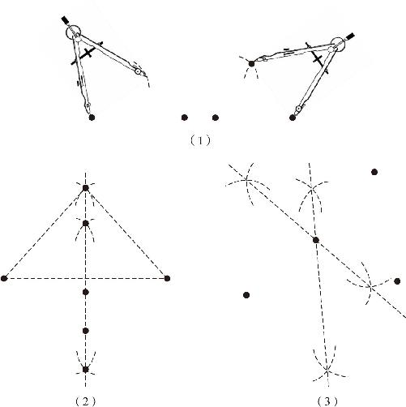

所谓的尺规作图，不过就是数学里边的加减乘除而已，无论是作垂线、平行线，还是对一个角作平分，都是利用三角形三边对应相等的这个判定定理．那么，关于尺规作图还有哪些规律呢？
不知你发现没有，我们在前面的作图过程中，大部分时间都只是在找点．
作一条垂线的时候，一开始只有一个垂足点，由于两点才能确定一条直线，因此要想把垂线作出来，就还需要另一个点才能确定这条垂线．于是我们就从垂足点出发，通过画弧线的方式，在直线上找到两个对称点，然后再以这两个交点为圆心，画出两个大圆，通过大圆的交点才找到了垂线上的另一点．作角平分线也是如此，一开始只有角的顶点这一个点，我们仍然是通过圆弧在这个角的两边上找到交点，然后再分别从两个交点出发画圆弧，通过圆弧的交点找到了另一个点．
其他作图问题也都是如此，我们必须得找到点，因为找不到新的点，就没法连线，没法作圆．但是，我们在一张空空如也的白纸上，怎么去找那个未知的点呢？只能通过线去找点，可是一条线上有无数个点，那怎么办？可以通过两条线来帮忙，无论是两条直线还是弧线，只要我们确定了两条线，很快就能找到它们的交点．尺规作图在生活中有什么用处吗？尺规作图的方法又告诉我们哪些道理呢？
当生活中一个具体的问题摆在面前的时候，为什么我们会感到迷茫呢？只要按照道理办不就可以了吗？为什么我们会犹豫不决呢？那是因为，我们只按照一个道理办事，条件不充分．前面说过，一个道理就是一条线，一条线上有无数个点，要想确定一件事怎么做，必须找到两个以上的道理才能确定．
接下来我们就处理这样一个生活中的问题：在一个地点的附近有三个村子，现在我们要为这三个村子的村民打上一口井，为了公平起见，需要让这口井到三个村的距离一样远．请问，我们如何确定这口井的具体位置呢？显然，这就是在一张白纸上找一个点的问题，这个点找不到怎么办，是不是就可以借助两条线来帮忙呢？可是，我们连线都找不到，现在这张白纸上，只有代表三个村子位置的三个孤零零的点，怎么办？我们可以从已知条件里头，先把这两条线找出来．一下子找不到距离三个村子同样远的点不要紧，可以先找距离其中的两个村子同样远的一条线．接下来我们就来试着找一找：
我们可以在一张白纸上描三个固定的点代表三个村子，然后任意选出其中的两个点来，再随意找出一个到这两个点距离相等的点．距离相等是很容易操作的，我们知道，圆规画出的圆弧到圆心的距离就是永远相等的，于是我们可以把圆规叉开，以一个固定的长度为半径，然后分别以两个村为圆心，用这个半径画上两段圆弧，使这两段圆弧产生一个交点，那么这个交点到两个村的距离正好等于刚才我们用圆规叉好的半径．［如图6－12（1）所示］

图6－12
这个过程就等同于在通过两个道理确定一件事情怎么做：由于半径没有变化，所以第一段圆弧上所有的点到第一个圆心的距离等于半径；同理，第二段圆弧上所有的点到第二个圆心的距离也等于同一个半径，而中间的交点既存在于第一段圆弧上，又存在于第二段圆弧上，因此它到两个圆心的距离，肯定也等于同一个半径了．也就是说，一件事儿要办得靠谱，就应该既符合第一个道理的要求，又符合第二个道理的要求．不是要找一条线吗？可是我们现在只是找到了一个点．没关系，因为我们的半径是随意给定的，只要我们按照这种方式多作几个点，就会发现与两个村子距离相等的那些点全部存在于一条直线上，这条直线就是两点之间线段的垂直平分线．那这又是为什么呢？
很简单，因为如果我们把垂直平分线上的任何一点和这两个村子一连，马上就会形成两个全等的三角形，为什么这两个三角形全等呢？因为既然这两个村子之间的连线被垂直平分了，就有两个直角对应相等，两条直角边对应相等，同时这两个三角形背靠背紧挨在一起，它们之间有一条公共边，于是就符合了边角边判定定理的条件，因此这两个直角三角形一定是全等的．垂直平分线上的任何一点到线段两个端点的距离相等，这就是线段垂直平分线的性质定理．［如图6－12（2）所示］现在，我们终于从一张白纸上找到一条线了，在寻找一条线的过程中，发现的是一条新的定理．同样，当我们在繁杂的生活事务中理出头绪的时候，就发现了一种做人做事新的道理．
现在我们知道，只要把井打在两个村子之间的垂直平分线的任何一点上，不管这一点有多么遥远，它到两个村子的距离都是相等的．接下来我们就考虑第三个村子的问题：既然我们发现了垂直平分线的性质定理，那么就可以依靠它的帮助来确定另一条线了．我们只需要从先前的两个村子里随便选出一个点来，和第三个村配成一对儿，然后把这两个村的垂直平分线也作出来就可以了．这条新的垂直平分线上的任何一点到第二个和第三个村的距离肯定也相等的，既然已经有两条垂直平分线，它们肯定就会产生一个交点，因为这个交点属于第一条垂直平分线，所以它到第一个村子和第二个村子的距离相等；又因为这个点也在第二条垂直平分线上，所以它到第三个村子的距离也等于到第二个村子的距离，因此，它到三个村子的距离就肯定是相等的了．（如图6－12（3）所示）
以上，我们用尺规作图法解决了一个生活中的问题．我们知道，到两个点距离相等的点都在这两点之间线段的垂直平分线上；到三个点距离相等的点又在两条垂直平分线的交点上．其实我们真正要关注的内容，不仅仅是垂直平分线的性质定理，不仅仅是尺规作图的这些具体方法，而是隐藏在具体方法背后的思维方式：当我们处理代数问题的时候，一个道理就可以写出一个方程，两个道理就可以联合成为一个方程组；对方程组求解后，得到的答案就可以同时满足两个道理的要求．同理，当我们通过几何的方式来解决问题时，一个道理对应的就是一条线，这条线上所有的点都符合这个道理的要求；另一个道理对应的是另一条线，当我们把这两条线都画在同一个平面上的时候，自然就会产生交点．交点一确定下来，两个条件就都得到满足，一个事情该怎么做，也就有了确定性的结果．
在尺规作图中，除了全等三角形三边对应相等这个最基本的定理之外，常用的还有四个常用的定理：第一，到一个点的距离不变的所有点都集中在一个圆上；第二，到两个点的距离相等的点在这两点之间线段的垂直平分线上；第三，到一条线距离不变的点在这条线的平行线上；第四，到两条线距离相等的点在这两线夹角的角平分线上．那么，我们最后提到的这两个定理为什么成立呢？